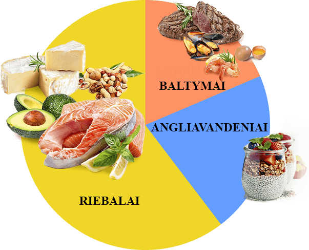

«O ile siebie pamiętam - zawsze jestem na diecie. Głód, sen i problemy ze skórą były moimi stałymi towarzyszami. Na wadze pojawił się minus, ale potem nastąpił ogromny plus i wszystko w kólko. Dowiedziałam się o KETO DIET od dietetyka. Wynikiem utraty wagi cieszyłam się niemal natychmiast. Co tydzień widziałam na wadze minus 3 kg. Dla mnie to była prawdziwa magia. Mój stan zdrowia był świetny, nie było głodu, spałam przez 7 godzin dziennie».
Dorota N, 27 lat

«Dla mnie KETO DIET było zbawieniem. Nigdy nie myślałam, że mogę jeść wszystko, co kocham, a jednocześnie schudnąć. Faktem jest, że zawsze miałam nadmiar węglowodanów w diecie. Co przekształciło się dla mnie w nadwagę 100 kg w ciągu 29 lat. Ogólnie rzecz biorąc, jak tylko nieznacznie dostosowałam ilość węglowodanów, waga zaczęła spadać. Ale nie mogę żyć bez węglowodanów, bo naprawdę lubię fast foody. Potem dowiedziałam się o KETO DIET. Po użyciu tego lekarstwa proces spalania nadmiaru wagi przebiegał znacznie szybciej i nawet nie musiałam rezygnować z węglowodanów. W sumie w ciągu 4 miesięcy schudłam 25 kg. DIETA KETO - po prostu strał w piąteczkę! Polecam wszystkim!»
Joanna K, 49 lat

Jak mało wiemy o naszych ciałach. Nie zastanawiałem się nawet, jakie zachodzą w nim złożone procesy, dopóki nie dotarłem do dietetyka i nie usłyszałem o ketozie. Jestem leniwą osobą. Nie mogę siedzieć na dietach, nie uprawiam też sport. Dlatego szukałem czegoś łatwego i szybkiego. O KETO DIET mogę powiedzieć jedno - musisz to spróbować! Dzięki temu środku udało mi się zrzucić rekordowe 15 kg i osiągnąć idealną sylwetkę.
Michał R, 34 lata